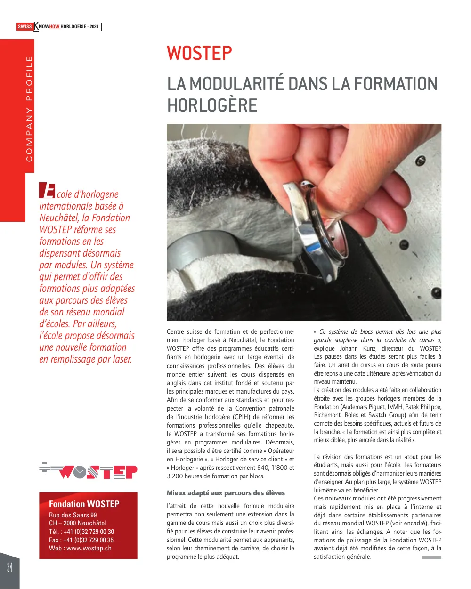
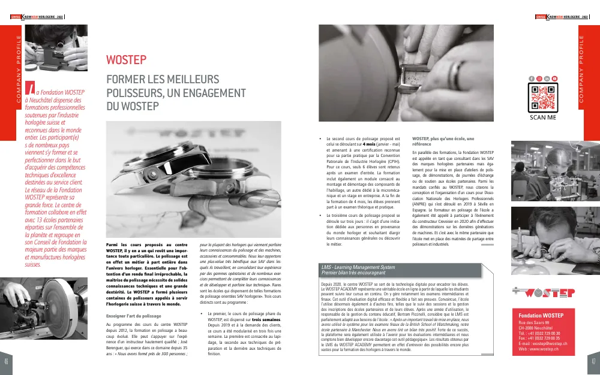
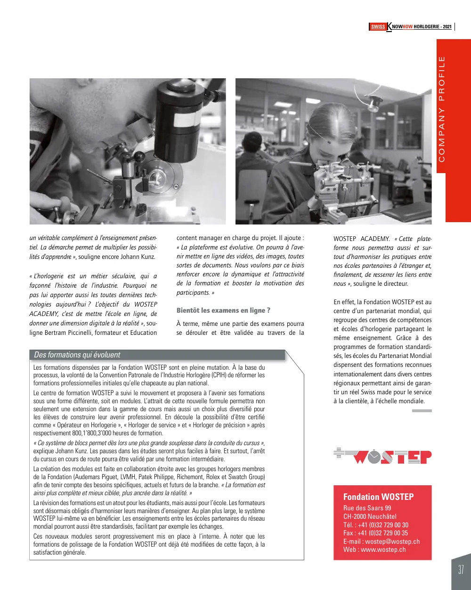

Dossier · Swiss Knowhow – Horlogerie 2024
WOSTEP – La modularité dans la formation horlogère
École d’horlogerie internationale basée à Neuchâtel, la Fondation WOSTEP réforme ses formations en les dispensant désormais par modules. Un système qui permet d’offrir des formations plus adaptées aux parcours des élèves de son réseau mondial d’écoles. Par ailleurs, l’école propose désormais une nouvelle formation en remplissage par laser.
Centre suisse de formation et de perfectionnement horloger basé à Neuchâtel, la Fondation WOSTEP offre des programmes éducatifs certifiants en horlogerie avec un large éventail de connaissances professionnelles. Des élèves du monde entier suivent les cours dispensés en anglais dans cet institut fondé et soutenu par les principales marques et manufactures du pays.
Afin de se conformer aux standards et pour respecter la volonté de la Convention patronale de l’industrie horlogère (CPIH) de réformer les formations professionnelles qu’elle chapeaute, le WOSTEP a transformé ses formations horlogères en programmes modulaires. Désormais, il sera possible d’être certifié comme « Opérateur en Horlogerie », « Horloger de service client » et « Horloger » après respectivement 640, 1'800 et 3'200 heures de formation par blocs.
Mieux adapté aux parcours des élèves
L’attrait de cette nouvelle formule modulaire permettra non seulement une extension dans la gamme de cours mais aussi un choix plus diversifié pour les élèves de construire leur avenir professionnel. Cette modularité permet aux apprenants, selon leur cheminement de carrière, de choisir le programme le plus adéquat.
« Ce système de blocs permet dès lors une plus grande souplesse dans la conduite du cursus », explique Johann Kunz, directeur du WOSTEP.
Les pauses dans les études seront plus faciles à faire. Un arrêt du cursus en cours de route pourra être repris à une date ultérieure, après vérification du niveau maintenu.
La création des modules a été faite en collaboration étroite avec les groupes horlogers membres de la Fondation (Audemars Piguet, LVMH, Patek Philippe, Richemont, Rolex et Swatch Group) afin de tenir compte des besoins spécifiques, actuels et futurs de la branche. « La formation est ainsi plus complète et mieux ciblée, plus ancrée dans la réalité ».
La révision des formations est un atout pour les étudiants, mais aussi pour l’école. Les formateurs sont désormais obligés d’harmoniser leurs manières d’enseigner. Au plan plus large, le système WOSTEP lui-même va en bénéficier.
Ces nouveaux modules ont été progressivement mais rapidement mis en place à l’interne et déjà dans certains établissements partenaires du réseau mondial WOSTEP (voir encadré), facilitant ainsi les échanges. A noter que les formations de polissage de la Fondation WOSTEP avaient déjà été modifiées de cette façon, à la satisfaction générale.
Se former au laser pour combler les rayures
Faire disparaitre les stigmates du temps sur une montre ancienne grâce au polissage a parfois des limites. Quand les rayures sont trop profondes, il faut les remplir. Ainsi la technologie de remplissage laser permet d'appliquer du métal sur diverses pièces métalliques endommagées en utilisant la soudure laser, pour combler les lacunes et remplacer le matériau manquant. Cette méthode de réparation et de reconditionnement des pièces tout en préservant leur forme et leur aspect de surface d'origine est spécialement destinée à la restauration de pièces vintage, particulièrement tendance en ce moment.
Une toute nouvelle formation vient d’être intégrée au programme du WOSTEP pour apprendre à maîtriser la technique. Ce cours de Rechargement par soudure laser de 5 jours de la Fondation WOSTEP répond à une demande croissante du marché. Pour participer, il est nécessaire d'avoir un niveau minimum de connaissances dans les techniques de polissage, c'est-à-dire d’être diplômé du programme d’Opérateur en polissage service client ou d’avoir suivi le cours de Polissage - Différentes techniques de polissage ou similaire.
Un partenariat mondial
La Fondation WOSTEP, ce n’est pas qu’une école à Neuchâtel, mais un véritable réseau d’établissements à travers le monde qui dispense des formations professionnelles soutenues par l’industrie horlogère suisse et reconnues dans le monde entier. Si les élèves de nombreux pays viennent se former et se perfectionner à Neuchâtel, ils peuvent également le faire dans le réseau de la Fondation qui est actuellement constitué de 12 écoles partenaires réparties sur l’ensemble de la planète, dont deux nouvelles : une école d’horlogerie à Dubaï ainsi qu’une école interne du SwatchGroup à Granges (SO).
Toute ces écoles du Partenariat Mondial peuvent choisir un portfolio qui correspond aux besoins de leur marché local. Les élèves peuvent aussi passer au programme de niveau supérieur dans toute école du partenariat qui offre l’option correspondante.
Texte paru dans Swiss Knowhow – Horlogerie 2024, p. 34-35, tel que publié dans l'édition imprimée. En cas d'écart, la version imprimée fait foi.
Photos
Articles

Dossier · texte intégralWOSTEP – La modularité dans la formation horlogère
Formations par modules et nouveau cours de rechargement par soudure laser

Publireportage · texte intégralWOSTEP – Former les meilleurs polisseurs, un engagement du WOSTEP
La Fondation WOSTEP et ses formations en polissage

Publireportage · texte intégralWOSTEP – Enseigner l'horlogerie à l'heure du digital
La Fondation WOSTEP se lance dans l'e-learning
 Publireportage · texte intégral
Publireportage · texte intégralWostep – Perfectionnement horloger à la carte
Une école internationale d’horlogerie qui forme aussi l’industrie locale
WOSTEP – Garant de la relève horlogère
Centre de formation et de perfectionnement horloger à Neuchâtel
WOSTEP – Un demi-siècle de formation horlogère suisse à l'étranger
Fondation pour la formation et le perfectionnement horlogers
Parutions
- Swiss Knowhow – Horlogerie 20242024 · page 34-35PDF

- Swiss Knowhow – Horlogerie 20222022 · page 46-47PDF

- Swiss Knowhow – Horlogerie 20212021 · page 36-37PDF

- Swiss Knowhow – Horlogerie 20192019 · page 57PDF

- Swiss Knowhow – Horlogerie 20182018 · page 30-31PDF

- Swiss Knowhow – Sous-traitance horlogère 20162016 · page 94PDF